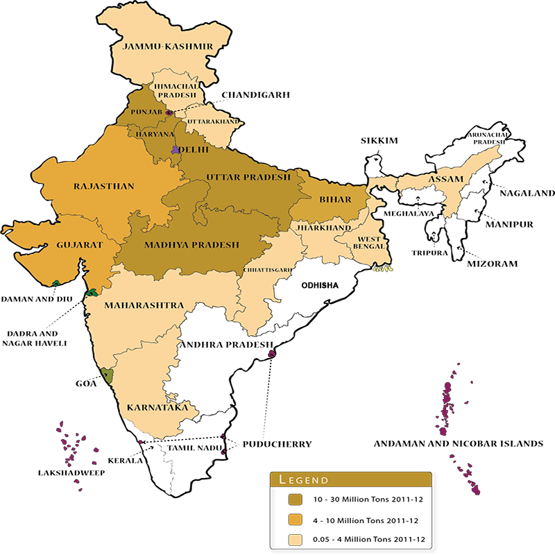

Wheat is the main cereal crop in India. The total area under the crop is about 29.8 million hectares in the country. The production of wheat in the country has increased significantly from 75.81 million MT in 2006-07 to an all time record high of 94.88 million MT in 2011-12. The productivity of wheat which was 2602 kg/hectare in 2004-05 has increased to 3140 kg/hectare in 2011-12. The major increase in the productivity of wheat has been observed in the states of Haryana, Punjab and Uttar Pradesh. Higher area coverage is reported from MP in recent years. Indian wheat is largely a soft/medium hard, medium protein, white bread wheat, somewhat similar to U.S. hard white wheat. Wheat grown in central and western India is typically hard, with high protein and high gluten content. India also produces around 1.0-1.2 million tons of durum wheat, mostly in the state of Madhya Pradesh. Most Indian durum is not marketed separately due to segregation problems in the market yards. However, some quantities are purchased by the private trade at a price premium, mainly for processing of higher value/branded products. The production and productivity of Wheat crop were quite low, when India became independent in 1947. The production of Wheat was only 6.46 million tonnes and productivity was merely 663 kg per hectare during 1950-51, which was not sufficient to feed the Indian population. The Country used to import Wheat in large quantities for fulfilling the needs of our people from many countries like USA under PL-480. The reasons of low production and productivity of Wheat at that time was (a) the tall growing plant habit resulting in lodging, when grown under fertile soils, (b) the poor tillering and low sink capacity of the varieties used, (c) higher susceptibility to diseases, (d) the higher sensitivity to thermo & photo variations, etc., resulting in poor adaptability, and (e) longer crop duration resulting in a long exposure of plants to the climatic variations and insect pest / disease attacks. The Government of India appointed a commission in 1961 to assess the feasibility of increasing the crop productivity under prevailing Indian ecological conditions. As result of various steps taken by Govt. of India, the Wheat scenario in our country has completely changed. In the post Independence era, country used to import Wheat for our needs but due to bumper increase in the production and productivity of Wheat in the 'Green Revolution' period in late sixties, our country became self dependent in Wheat production. At present, country is producing much more excess Wheat than the requirement and Godowns are over-flooded with Wheat.
Climate requirement
Wheat crop has wide adaptability. It can be grown not only in the tropical and sub-tropical zones, but also in the temperate zone and the cold tracts of the far north ,beyond even the 60 degree north altitude . Wheat can tolerate severe cold and snow and resume growth with the setting in of warm weather in spring .It can be cultivated from sea level to as high as 3300 meters.
The best wheat are produced in areas favoured with cool, moist weather during the major portion of the growing period followed by dry, warm weather to enable the grain to ripen properly. The optimum temperature range for ideal germination of wheat seed is 20-25 C though the seeds can germinate in the temperature range 3.5 to 35 c. Rains just after sowing hamper germination and encourage seedling blight. Areas with a warm and damp climate are not suited for wheat growing.
During the heading and flowering stages, excessively high or low temperatures and drought are harmful to wheat. Cloudy weather, with high humidity and low temperatures is conducive for rust attack. Wheat plant requires about 14-15 c optimum average temperature at the time of ripening . The temperature conditions at the time of grain filling and development are very crucial for yield. Temperatures above 250c during this period tend to depress grain weight. When temperatures are high, too much energy I lost through the process of transpiration by the plants and the reduced residual energy results in poorer grain formation and lower yields. Wheat is mainly a rabi (winter) season crop in India.
Soil
Wheat is grown in a variety of soils of India. Soils with a clay loam or loam texture, good structure and moderate water holding capacity are ideal for wheat cultivation. Care should be taken to avoid very porous and excessively drained oils. Soil should be neutral in its reaction. Heavy soil with good drainage are suitable for wheat cultivation under dry conditions. These soils absorb and retain rain water well. Heavy soils with poor structure and poor drainage are not suitable as wheat is sensitive to water logging. Wheat can be successfully grown on lighter soils provided their water and nutrient holding capacity are improved.
Fertilizer management
The time and placement of fertilizer is another area where significant progress was made. It was demonstrated that 120 kg nitrogen, 60 kg phosphorus and 30 kg potash per hectare were required for optimum productivity. The N was to be applied in two split doses of 60 kg as basal and the remaining 60 kg at first irrigation and full phosphorus and potash to be applied as basal. Recently, the new wheat varieties have responded up to 180 kg N/ha with optima dose around 150 kg/ha. In the Indo-Gangetic plains, application of zinc @ 25kg/ha in rice-wheat system was found to increase the yield substantially. Recently, the use of sulphur has been found beneficial for enhancing the productivity as well as the grain protein content of wheat. Response to Mn (pockets in the Indo-Gangetic plains) and boron (eastern and far eastern region) has also been realized.
Nutrient management
With intensive agriculture, deficiency of essential nutrients has also become wide spread. The work conducted under the All India Coordinated Research Project on Micronutrient in Crops and Soils, has shown wide spread deficiency of zinc in soils in India. At the national level, the deficiency level in micro nutrients is Zn: 46 %, B: 17 %, Mo: 12 %, Fe: 11 % and Cu: 5%. The deficiency of sulphur has also been reported across a wide range of soils (38%).The yield response to sulphur has been obtained in more than 40 crops including cereal, millets, oilseeds and pulses etc. To realize the potential yield, strategies may include
Site specific nutrient management for targeted yieldsIntegration of crop residues, bio fertilizers etc with inorganic fertilizationTillage techniques like FIRBS for increasing nutrient use efficienciesRemote sensing for efficient Nutrient managementNutrient management, straw quality vis-à-vis human and animal health
major wheat producing states
